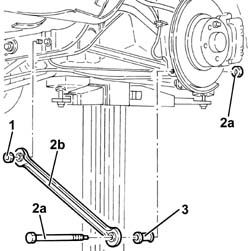

4420B18 rear wishbone - r r
- Path
- Procedures > 44 SUSPENSION AND WHEELS > 4420 REAR SUSPENSION > 4420B rear suspension wishbones > 4420B18 rear wishbone - r r
- Kind
- repair procedure (removal / refitting; the operation number is the code)
- Applies to
- all engines; all production periods
- Interactive page
- https://sloeber94.github.io/elrnDB-a156/en/#/3238203
Applies to: all engines; all production periods
 Removing
Removing
 Refitting
RefittingPosition the vehicle on the ramp.
Raise the vehicle.
4450B11 WHEEL (one) rear - R.R.
1. Undo the nut fixing the rear suspension rear track control arm to the crossmember.
2. Undo the bolt (2a) and remove the rear suspension rear wishbone (2b).
3. Remove the bush.

Applies to: all engines; all production periods
Refitting
RemovingFit the rear suspension rear track control arm complete with bush and secure it to the shock absorber tightening the bolt to torque.
 | Fastening | Component | Ø | Value (daNm) |
|---|---|---|---|---|
- | Bolt | REAR WISHBONE | M12 | (Shock absorber side) 9.5 ÷ 11.6 |
Tighten the nut fixing the rear suspension rear track control arm to torque.
| Fastening | Component | Ø | Value (daNm) |
|---|---|---|---|---|
- | Bolt | REAR SUSPENSION REAR WISHBONES | M12 | (Crossmember side) 6.2 ÷ 6.8 |
4450B11 WHEEL (one) rear - R.R.
Lower the vehicle.
Remove the car from the ramp.
Check and if necessary adjust the wheel geometry values 4450A40 rear wheel geometry - check using optical equipment .